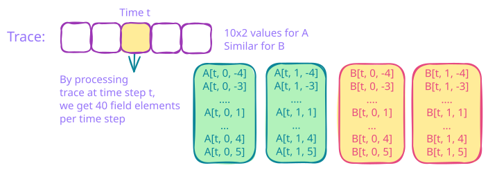

The Anatomy Of A Jolt Sumcheck
This PR introduces a generalised sum-check API, adapted to accommodate an implementation of Jolt that uses \(O(1)\) memory1.
The Trace
Before we describe the API, it will be useful to briefly re-cap how Jolt works. At the heart of the jolt prover is the sumcheck algorithm. Given some polynomial \(g\) and a set \(S\) with sufficient structure2, the sum-check algorithm enables a prover to convince a verifier that it computed \(\sum_{x \in S} g(x)\) honestly. The end goal of the Jolt prover is to convince an honest verifier that it ran some guest program3 correctly. It does so via many sum-check algorithms. Therefore for the whole setup to work, the polynomials involved in these sumchecks must be in someway related to the execution of said program. As such honest proving begins with emulation of the given RISC-V program – which we refer to as the trace. This is a fancy way of saying that the prover runs the program, and stores succinctly as a list the machine state before and after each instruction. This list is what we refer to the trace. And it is this trace from which we will construct the sum-check polynomials in Jolt. See this post for a fully worked out description of the emulation from an actual albeit useless program written in Rust. For example, consider the following program with just two instructions.
00001117 auipc sp,0x1 # sp = PC + (0x1 << 12) = 0x80000000 + 0x1000 = 0x80001000
12010113 addi sp,sp,288 # sp = 0x80001000 + 288 = 0x80001120
After doing some initial setup of all the values of registers and memory, the emulation looks like the following:
Cycle 0: AUIPC(
address: 2147483648, // = 0x80000000 ✓
operands: FormatU {
rd: 2, // x2 = sp (stack pointer)
imm: 4096, // = 0x1000 ✓
},
register_state: {
rd: (0, 2147487744) // sp: 0 → 0x80001000 ✓
}
)
Cycle 1: ADDI(
RISCVCycle {
instruction: ADDI {
address: 2147483652, // = 0x80000004 ✓ (Program counter)
operands: FormatI {
rd: 2, // sp (based on mapping above)
rs1: 2, // sp
imm: 288, // = 0x120 ✓
},
virtual_sequence_remaining: None,
is_first_in_sequence: false,
is_compressed: false,
},
register_state: RegisterStateFormatI {
rd: (
2147487744, // new value in rd
2147488032, // old value in rd
),
rs1: 2147487744, // value in rs1
},
ram_access: (), // no ram access
},
)
For the purposes of this post, this is the mental model we will have when referring to the trace. It is a giant vector of length \(T\), and location \(t \in [T]\) stores the machine state before and after the \(t\)’th instruction.
A Lie In Service Of The Truth
Throughout this post we will assume that we can store the entire trace in memory, and iterating through the trace is free. This is clearly not true, and we will fix this at a later date. But for the purposes of this post, this assumption allows us to abstract away important implementation details that currently remain unimplemented – and prove that we can indeed implement any jolt sumcheck with \(O(1)\) memory.
Correctness As Constraint Satisfaction
Now with the trace/emulation in hand, we ask - what does it mean for a program to be executed correctly? One way to define correctness would be to say at every cycle, the machine state is consistent with the program specification. As a concrete example, consider loading and storing to memory. In RISC-V assembly loads/store instructions look like the following:
lb rd, offset(rs1) # Load byte (sign-extended)
lh rd, offset(rs1) # Load halfword (sign-extended)
lw rd, offset(rs1) # Load word (sign-extended)
ld rd, offset(rs1) # Load doubleword (RV64)
lbu rd, offset(rs1) # Load byte unsigned
lhu rd, offset(rs1) # Load halfword unsigned
lwu rd, offset(rs1) # Load word unsigned (RV64)
sb rs2, offset(rs1) # Store byte
sh rs2, offset(rs1) # Store halfword
sw rs2, offset(rs1) # Store word
sd rs2, offset(rs1) # Store doubleword (RV64)
So if the instruction has the Load flag set to 1 or
Store flag set to 1, then the address from which we
read/write must be equal to value in rs1 + offset. Using
propositional logic we write:
if { Instruct has Load OR Store } then ( RamAddress ) == ( Rs1Value + Imm )
The same thing expressed as algebraic constraints:
(Load + Store) * (RamAddress - (Rs1Value + Imm)) = 0For a program to be correctly executed, for every time step \(t \in \{ 0, 1\}^{\log T}\), the above
constraint must be satisfied. Of course for a program to be correct, it
is not sufficient to just satisfy the above constraint. There are many
more constraints. In the OuterSpartan sumcheck we write
down 20 such constraints, express
these constraints as the evaluations of two polynomials \(\widetilde{A}\) and \(\widetilde{B}\), and represent constraint
satisfaction as a sumcheck. More details follow.
The Outer Spartan Polynomials
There are 20 constraints for each time step \(t \in \{ 0, 1\}^{\log T}\). Each constraint will be of form
Term 1 * Term 2 = 0.
Here Term 1 will be represented by \(A\) and Term 2 will be
represented by \(B\).
Indexing: We divide the 20 constraints into 2 groups. We refer to the each constraint using two digits4 \((b,y)\) where \(b \in \{ 0, 1\}\) is the selector index, and \(y\in \{-4, \ldots, 5\}\) refers to one of the 10 constraints in group \(b\). For example,
\((0,-4)\) refers to constraint 1,
\((0, -3)\) refers to constraint 2,
…
\((1, 5)\) refers to the 20th constraint and so on.
Example : Constraint 1
Let \(z_t[\text{LOAD}], z_t[\text{STORE}] \in \{ 0, 1\}\) denote boolean flags that denote whether the \(t\)’th instruction contains a LOAD or a STORE instruction. For a given time step \(t \in \{ 0, 1\}^{\log T}\), using information from the trace, we write a table of evaluations with the following indexing logic:
\(A(t, 0 , -4) = z_t[\text{LOAD}] + z_t[\text{STORE}]\)
\(B(t, 0, -4) = (\text{RamAddress} - (\text{Rs1Value} + \text{Imm}))\)
That is satisfying constraint 1 for time step \(t\) is equivalent to checking if \(A(t, 0, -4) \times B(t, 0, -4) = 0\). The remaining 19 constraints give us evaluations \(A(X_t, X_b, Y)\) and \(B(X_t, X_b, Y)\) for \(Y \in \{-4, \ldots, 5\}, X_b \in \{ 0, 1\}, X_t \in \{ 0, 1\}^{\log T}\). The picture you have in mind is the following

Satisfying all constraints is just saying the following:
\[\widetilde{A}(x_t, x_b, y) \times \widetilde{B}(x_t, x_b, y) = \vec{0} \quad \forall x_t \in \{0,1\}^{\log T}, \forall x_b \in \{0,1\}, \forall y \in \{-4, ..., 5\}\]
where \(\widetilde{U}\) denoes the multi-linear extension of a vector \(U\). Now we do the thing we have done since the beginning of time. We want to make sure the LHS of the above system of equations to equal the RHS as polynomials. So we sample \((\tau_{\text{cycle}}|| \tau_b|| \tau_y) \xleftarrow[]{\$}\mathsf{C}^{\log T+2}\) and check if the following sumcheck holds:
\[\sum_{x_t \in \{0,1\}^{\log T}} \sum_{x_b \in \{0,1\}} \sum_{y \in \{-4,...,5\}} \widetilde{\mathsf{eq}}\left(\tau_t, x_t \right) \cdot \widetilde{\mathsf{eq}}\left(\tau_b, x_b \right) \cdot \mathcal{L}_{y}\left(\tau_y \right) \cdot \widetilde{A}(x_t, x_b, y) \, \widetilde{B}(x_t, x_b, y) = 0 \]
By Schwartz-Zippel, with high probability if the above tests passes, then the verifier can be happy that the prover was honest.
Review Of The Linear Sumcheck Implementation
As described above in the picture, that in-order to get \(\widetilde{A}(x_t, x_b, y)\) and \(\widetilde{B}(x_t, x_b, y)\) we need to
process the \(t\)’th location of the
trace. As soon as we process every location of the trace once, we can
store \(\widetilde{A}\) and \(\widetilde{B}\) in memory. This requires
\(T \times 2 \times 20\) field elements
worth of memory. If we could afford this, – we can bin the trace once
and for all. We have every bit of information needed to complete the
sum-check algorithm. This is almost how the current implementation of
the linear OuterSpartan sumcheck looks like. Except there’s
a special first round, which we describe below.
- A special handling of round involving variable \(Y\) involving 10 constraints per time step and group index.
Remember in each round of the sum-check the prover sends to the verifier a univariate polynomial, and the verifier responds with a challenge \(r \xleftarrow[]{\$}\mathsf{C}\) sampled from the challenge set. We iterate through the entire trace, but we do NOT compute and store \(\widetilde{A}\) and \(\widetilde{B}\) in memory. Instead we store in memory, the following univariate polynomial, which is the provers first round message.
\[s(\textcolor{pink}{Y}) :=\sum_{x_t \in \{0,1\}^{\log T}} \sum_{x_b \in \{0,1\}} \widetilde{\mathsf{eq}}\left(\tau_t, x_t \right) \cdot \widetilde{\mathsf{eq}}\left(\tau_b, x_b \right) \cdot \mathcal{L}_{\tau_y}\left(\textcolor{pink}{Y} \right) \cdot A(x_t, x_b, \textcolor{pink}{Y}) \, B(x_t, x_b , \textcolor{pink}{Y})\]
This takes \(O(1)\) field elements
worth of storage as there are only \(10\) constraints per group. See
for the evaluation points that represent the above polynomial. We refer
to these evaluations as the skip_window in the code.
NOTE:: This phase will remain exactly the same in the current “streaming” implementation as well. Remember we assumed streaming the trace was free, and storing \(O(1)\) field elements for a univariate polynomial does not break anyone’s memory bank. We include this round in this post for completeness.
After this round, the prover has received challenge \(r_y\) to bind to variable \(Y\). What we describe next, refers to the
OuterRemainingSumcheck in Jolt. The sumcheck is divided
into 2 phases:
- A setup phase which materialises the polynomials – this is the
genconstructor. - The remaining communication rounds (which are standard).
Setup Phase
We iterate over the entire trace one more time, and now materialise polynomials \(\widetilde{A}, \widetilde{B}\) with \(r_y\) bound to variable \(Y\). This takes \(2T\) field elements worth of space.
More specifically for every \((x_{\log T}, \dots, x_{1}, x_b) \in \{ 0, 1\}^{\log T + 1}\), we store
\[\widetilde{A}(x_{\log T}, \dots, x_{1}, x_b, r_y) = \sum_{y \in \{-4. \dots, 5\}} \mathcal{L}_{\tau_y}\left(y \right)\, \widetilde{A}(x_{\log T}, \dots, x_{1}, x_b, y)\] and \[\widetilde{B}(x_{\log T}, \dots, x_{1}, x_b, r_y)= \sum_{y \in \{-4. \dots, 5\}} \mathcal{L}_{\tau_y}\left(y \right)\, \widetilde{B}(x_{\log T}, \dots, x_{1}, x_b, y)\]
This storing of partially bound sumcheck polynomials in memory is what we refer to as materialising.
While we’re materialising \(\widetilde{A}\) and \(\widetilde{B}\), we might as well prepare
ourselves to also compute the provers messages for first round of the
sum-check algorithm. This process where we materialise the polynomials
of the sum-check and also compute the messages for the
next round is referred to as fused materialisation in the
code. This is exactly what the method
fn compute_first_quadratic_evals_and_bound_polys described
here does.
Here t0 and t_inf refer to evaluations of
the following quadratic polynomial.
\[t(\textcolor{pink}{X_b}) :=\sum_{x_t \in \{0,1\}^{\log T}}\sum_{y \in \{-4, \dots, 5\}} \widetilde{\mathsf{eq}}\left(\tau_t, x_t \right) \cdot \mathcal{L}_{r_y}\left(y \right) \cdot \widetilde{A}(x_t ,\textcolor{pink}{X_b}, y) \, \widetilde{B}(x_t, \textcolor{pink}{X_b}, y) \]
The final polynomial that the prover must send is the following:
\(s(X_b) :=\mathcal{L}_{\tau_y}\left(r_0 \right) \cdot t(\textcolor{pink}{X_b}) \cdot \widetilde{\mathsf{eq}}\left(\tau_b, \textcolor{pink}{X_b} \right)\)
which is exactly what the following snippet of code on Line 1430 of
jolt-core/src/zkvm/spartan/outer.rs
self.split_eq_poly
.gruen_poly_deg_3(t0, t_inf, previous_claim)
The Remaining Rounds
With \(\widetilde{A}\) and \(\widetilde{B}\) materialised. The remaining rounds are standard. The mental picture is the following:

At each bind the length of the representation of \(\widetilde{A}\) and \(\widetilde{B}\) shrinks by half. And the next prover message can be computed from the bounded and materialised polynomials. The code is described here.
In conclusion, the linear sum-check with a special first round required that we stream the trace twice. The second time of doing so – we materialised the polynomials with only \(r_0\) bound to \(Y\). Once we materialise, we never have to look at the trace ever again – for at least this sum-check. But this came at the cost of storing \(2T\) field elements in memory per polynomial. If \(T\) is large, on the order of billions, then this is too expensive.
In this world where iterating through the trace is free, we could never materialise any polynomial and always just stream the trace every round (like we did in the first round). That would take close to no memory at all. While this is true, streaming the trace is actually not free, and we want to avoid it as many times as possible. We only assume its free to make the memory accounting work for this post. Eventually, we will have to implement a memory efficient way to stream the trace – but that is not terribly hard, and will soon be implemented. In what follows, we make a compromise, of sometimes streaming instead of always streaming, but this will allow us to store fewer things.
The Streaming Generalisation
To describe the streaming sum-check we need to first describe what we mean by a sum-check schedule.
- A schedule classifies every round of the sum-check as being a
window_startround or not. For example the sum-check involving 16 rounds of interaction below can be scheduled as shown below. Rounds 0, 3, 6, 9, 10, …, 15 are all window starts.

For every round, we have a notion of width or the number of unbound variables. This is given by the distance of current round from the next window start (or the end if there is no more window starts). So in the above example, round 0 has window width 3, round 1 has width 2, round 2 has width 1, and round 3 has width 3 again, round 4 has width 2 and so on.
Out of all the rounds that are marked as
window_startrounds, exactly one round is marked as special, and we call it the switchover point. This switchover point will mark the round at which we materialise the polynomials from the trace and store it in memory. In the example above, the switch over round is the 10th round given by round index 9. The width of this round is one in the above example (but it doesn’t have to be such).
At this point it should be somewhat clear that the later we materialise, the more variables would be bound by verifier challenges, hence the memory representation of the materialised polynomial will be smaller. However, the later we materialise, it means we would have to stream the entire trace to compute prover messages more times. There is an inherent tradeoff here that cannot be avoided. The rough sketch of the algorithm proceeds is as follows:
If a round \(i \in \{0, .. n-1\}\) is the start of a window with width \(w\) – we need to stream over the entire trace to generate and store a multi-variate polynomial \(t\) with \(w\) variables. This requires storing \(W:=(d+1)^w\) evaluations of \(t\) in memory, where \(d\) is the degree of \(t\). This degree \(d\), \(w\)-variate polynomial is what is referred to as
t_gridor the streaming data structure. As \(d\) and \(w\) will be small constants, storingt_gridin memory is essentially free.Once store \(t\) in memory, we can compute all prover messages needed for the next \(w\) rounds of sum-check, without streaming the trace again. If this is not immediately clear, we work out an example below.
On receiving a verifier challenge \(r\) for the current round, we shrink the size of \(t\) by a factor of \(d+1\) (just as in the case of the linear-sum-check) where \(d\) is the degree of \(t\). The factor is 2 if \(t\) is multi-linear.
In the last round of the given window the size of \(t\) should reduce to 1.
The next round is either the start of a new window or its the switchover point. If it’s the former, we repeat the process described above. That is, we stream the trace again, and compute \(t\) from the trace.
If the round \(\hat{t} \in [n]\) is the switch-over point, we stream over the trace and store a multi-linear polynomials \(\widetilde{A}(\textcolor{orange}{r_y, r_b, r_1, \ldots, r_{\hat{t}-1}}, X_{\hat{t}}, \ldots, X_{\log T})\) and \(\widetilde{B}(\textcolor{orange}{r_y, r_b, r_1, \ldots, r_{\hat{t}-1}}, X_{\hat{t}}, \ldots, X_{\log T})\). Note that as we are materialising later, the size of these polynomials is much smaller than if we materialised in the first or second round.
Once again we compute \(t\) to answer the provers messages. But crucially, this time we do it from materialised polynomials above. We no longer need to stream the strace.
If the above description is all too abstract, lets’ work through an actual example, and then finally look at the code snippets. For this sum-check the degree of \(t\) will be \(d=2\) always. In the example schedule above, the window width is \(w=3\) for round 0. The streaming data structure for to compute is the following:
\[\begin{align} t'(\textcolor{pink}{X_2, X_1, X_b}) = \sum_{y \in \{-4, \dots, 5\}}\sum_{x_{15}..x_{3} \in \{0,1\}^{13}} &A(x_{15}...x_3 , \textcolor{pink}{X_2, X_1, X_b},\, y) \\ &\cdot B(x_{15}...x_3,\textcolor{pink}{X_2, X_1, X_b},\, y)\, \mathcal{L}_{y}\left(r_y \right) \\[10pt] &\cdot\text{eq}(\tau_{15}..\tau_3; x_{15}...x_3) \end{align}\]
Thus, we need \((d+1)^w = 3^3 = 27\)
evaluations to represent \(t\). In Jolt
we evaluate \(t\) at \(\{0,1, \infty\}^{w}\) and the data
structure that stores is this evaluations is called t_grid
which is what describe as the streaming data structure. This is exactly
what the method
fn compute_evaluation_grid_from_trace(&mut self, window_size: usize)
computes. The next stage is to compute \(t(0)\) and \(t(\infty)\) where \[
t(\textcolor{pink}{X_b}) = \sum_{x_2, x_1 \in \{0,1\}^2 } t'(x_2,
x_1, \textcolor{pink}{X_b})\,\,\text{eq}(\tau_2, \tau_1; x_2, x_1)
\]
This is what
fn compute_t_evals(&self, window_size: usize) -> (F, F)
computes.
Throughout this post when we write \(\widetilde{\mathsf{eq}}\left(\tau, x \right)\), we assume its implemented using the Dao-Thaler split-eq optimisation. Thus the memory representation of the \(\widetilde{\mathsf{eq}}\left(, \right)\) polynomials is never an issue.
Finally the provers message is given by \[ s(\textcolor{pink}{X_b}) = t(\textcolor{pink}{X_b})\,\text{eq}(\tau_b, \textcolor{pink}{X_b}) \]
Prover Messages Are Always Computed From t_grid
It is important to note that in every round of the sum-check the
provers messages will be computed using the streaming data structure
t_grid. We will shortly see that once the current
t_grid gets exhaused we will re-compute it.
A Note About Evaluating At Infinity
For a univariate polynomial \(p\), \(p(\infty)\) is equal to the coefficient associated with the highest degree variable of the polynomial. For example, if \(p\) is linear i.e \(p(X) = aX + b\), we have \(p(\infty) = a\).
This completes the first round message the prover sends.
Binding in the streaming phase
Note as \(t'\) is multi-variate,
we are sorted for the next \(w\)
rounds, till we bind all \(w\) of its
variables. In the example above, we can answer 3 rounds of prover
messages using t_grid only. Binding is exactly the same as
the linear version but we do it for the multi-quadratic polynomial and
is done by the
t_prime_poly.bind(r_j, BindingOrder::LowToHigh)
After binding in round 0 we go from \(t'(X_2, X_1, X_b)\) to \(t'(X_2, X_1, \textcolor{orange}{r_b})\). Then at then of round 1 we are left with \(t'(X_2, \textcolor{orange}{r_1, r_b})\) and after round 2 i.e 3 rounds of sum-check we are left with \(t'( \textcolor{orange}{r_2, r_1, r_b})\). Hereafter, we must stream the trace again – and we will as round 3 is a window start.
Additionally as the challenges come in, we also build a data
structure called r_grid which looks like the following
[
[1]
[(1-rb), rb] // eq(r_b, x_b)
[(1-rb)(1-r1), rb(1-r1), (1-rb)r1, rbr1] // eq(r_1, r_b, x_1, x_b)
...
]We will see shortly, we only need to store r_grid only
upto the switch-over point. The total amount of storage needed is \(2^{\hat{t}}\) where \(\hat{t} \in [n]\) is the switchover point
of the sum-check and \(n\) is the
number of rounds of the sum-check. If \(\hat{t}\) is large, we can always use the
split-eq technique for r_grid (this is not currently
needed).
The last line of r_grid helps us compute \(\text{eq}(\textcolor{orange}{r_{w-1},..., r_b},
x_{w-1},..., x_{b})\) which is useful when we recompute
t_grid in the first round of the next window.
Next Window Start
Now we still have not hit a switchover point, so nothing is materialised yet, so we once again compute the grid from the trace. Additionally, as we are not in the first round anymore, we have to deal with the verifier challenges – so the equations for computing the grid are the following.
\[\begin{align} t(\textcolor{pink}{X_5, X_4, X_3}) = \sum_{x_{15}..x_{6}, x_{2}, x_{1}, x_{b} \in \{0,1\}^{13}}\sum_{y \in \{-4, \dots, 5\}} & \widetilde{A}(x_{15}...x_6, \textcolor{pink}{X_5, X_4, X_3}, x_2, x_1, x_b, y) \\ &\cdot \widetilde{B}(x_{15}\dots x_6 ,\textcolor{pink}{X_5, X_4, X_3}, x_2, x_1, x_b, y) \\[10pt] &\cdot\text{eq}(\tau_{15}\dots\tau_6;\, x_{15}\dots x_6) \, \text{eq}(\textcolor{orange}{r_2, r_1, r_b}, x_{2}, x_{1}, x_{b}) \end{align}\]
So how the r_grid becomes useful now in the last line.
This process continues till we hit the switch over point. Also observer
that the RHS of the above equations actually visits every cell of the
trace exactly once. Hence we keep banging on about streaming the
trace.
At this point we have only used \(\max\{(d+1)^\hat{w}, 2^{\hat{t}}\}\) field elements worth of memory, where \(\hat{t}\) is the switch-over point and \(\hat{w}\) is the maximum window width for a round. \(d=2\) is for this sumcheck.
Switch Over Point
Finally we get to the switchover point. t_grid is
exhausted once again. We stream through the trace one last time to
manifest the bounded polynomials.
We now store for each \(X_{15}...X_9 \in \{0,1\}^{7}\)
\[\begin{align} & \widetilde{A}(\textcolor{pink}{X_{15}...X_9}, \textcolor{orange}{r_8, ..., r_b, r_y}) \\[10pt] &= \sum_{x_8...x_b \in \{0,1\}^9}\sum_{y \in \{-4, \dots, 5\}} \widetilde{A}(\textcolor{pink}{X_{15}, ..., X_9}, x_8...x_b, y)\,\text{eq}(\textcolor{orange}{r_8..r_b}, x_8...x_b)\, \mathcal{L}_{r_y}\left(y \right) \end{align} \]
\[\begin{align} & \widetilde{B}(\textcolor{pink}{X_{15}...X_9}, \textcolor{orange}{r_8, ..., r_b, r_y}) \\[10pt] &= \sum_{x_8...x_b \in \{0,1\}^9}\sum_{y \in \{-4, \dots, 5\}} \widetilde{B}(\textcolor{pink}{X_{15}, ..., X_9}, x_8...x_b, y)\,\text{eq}(\textcolor{orange}{r_8..r_b}, x_8...x_b)\, \mathcal{L}_{r_y}\left(y \right) \end{align} \]
NOTE: This just stores \(2^7\) field elements worth of storage (much fewer than the linear sumcheck setup). The method
fused_materialise_polynomials_general_with_multiquadratic
computes the above polynomials and stores them in memory. Note that as we have the polynomials at hand already, we also compute the grid now. In the schedule given above, the grid size is just 1, thus we only need to store
\[ \begin{align} t(\textcolor{pink}{X_9}) = \sum_{x_{15},\dots,x_{10} \in \{ 0, 1\}^{6}} & \widetilde{A}(x_{15}, \dots, x_{10}, \textcolor{pink}{X_9}, \textcolor{orange}{r_8, \dots, r_1, r_b, r_y})\\[10pt] &\cdot \widetilde{B}(x_{15}, \dots, x_{10}, \textcolor{pink}{X_9}, \textcolor{orange}{r_8, \dots, r_1, r_b, r_y}) \\[10pt] & \cdot \widetilde{\mathsf{eq}}\left(\tau_{15}, \dots, \tau_{10}, x_{15}, \dots, x_{10} \right) \\[10pt] \end{align} \]
Finally the prover message is \[s(\textcolor{pink}{X_9}) = t(\textcolor{pink}{X_9})\,\, \widetilde{\mathsf{eq}}\left(\tau_9, \textcolor{pink}{X_9} \right)\,\,\widetilde{\mathsf{eq}}\left(\tau_8, \dots, \tau_b, \textcolor{orange}{r_{8}, \dots, r_{b}} \right)\,\,\mathcal{L}_{\tau_y}\left(\textcolor{orange}{r_y} \right) \]
From here onwards, whenever we need to compute the grid, we never look at the trace. We can directly do it from the materialised polynomials \(\widetilde{A}\) and \(\widetilde{B}\). This is what the method
compute_evaluation_grid_from_polynomials_parallel
computes.
From here on after the switchover point we NEVER touch the trace again.
Actual Code
Below we describe what the compute_message method of the
generalised sumcheck looks like. The following snippet of code executes
the logic describe above, based on the round classification.
fn compute_message(&mut self, round: usize, previous_claim: F) -> UniPoly<F> {
let num_unbound_vars = self.schedule.num_unbound_vars(round); // The size of the streaming data structure
if self.schedule.is_switch_over_point(round) { // Check if it's time materialise the sum-check polynomials
self.materialise_polynomials_from_trace(num_unbound_vars); // Materialise bound polynomials A and B
}
else if self.schedule.is_window_start(round) { // Window start
if self.schedule.before_switch_over_point(round) { // Need to compute streaming data structure from trace
self.compute_evaluation_grid_from_trace(num_unbound_vars);
} else {
// Have materialised polynomials, no need to stream the trace anymore
self.compute_evaluation_grid_from_polynomials_parallel(num_unbound_vars);
}
}
// This part remains unchanged -- from the linear sum-check
let (t_prime_0, t_prime_inf) = self.compute_t_evals(num_unbound_vars);
self.split_eq_poly
.gruen_poly_deg_3(t_prime_0, t_prime_inf, previous_claim)
}
This statement is strictly not true. In the current implementation, as a consequence of the process by which we construct the polynomials, we still need \(O(T)\) memory, where \(T\) is the number of instructions in the guest program (both virtual and real). But in this post we make a few simplifying assumptions, by which the statement does ring true.↩︎
It is not so imporant to be formal about what we mean by sufficient structure here. If \(g \in \mathbb{F}[x_1, \dots, x_n]\), then we can just pretend \(H = \{ 0, 1\}^n\).↩︎
A program is just a sequence of RISC-V instructions.↩︎
We choose those indices for \(y\) instead of bit string or the set \(\{0, \ldots, 9\}\) for computational reasons, the details of which we dot discuss here (maybe for a separate post).↩︎